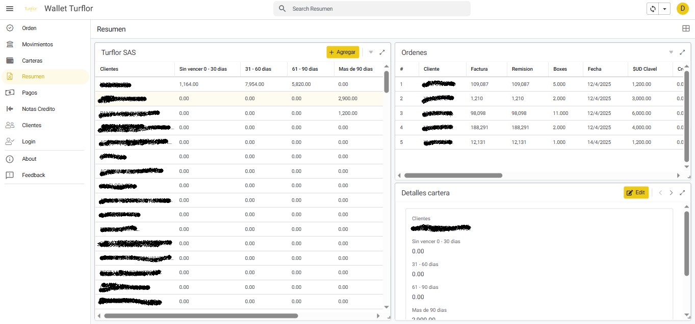
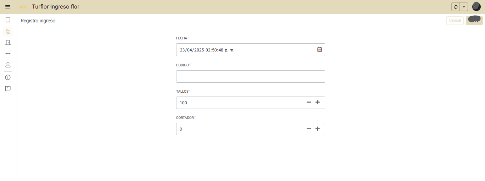
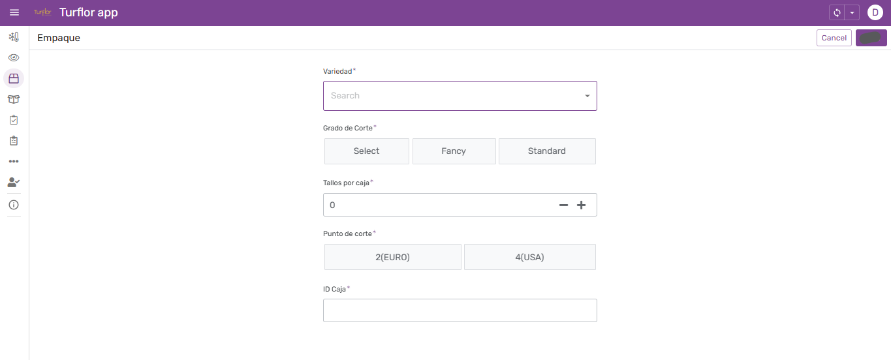

Proyectos
Aquí puedes ver algunos de mis proyectos más destacados:
App "Manejo de carteras"
Descripción breve del proyecto.
Turflor App Cartera es una aplicación móvil para la gestión financiera de carteras de clientes de Turflor SAS. Permite administrar clientes, visualizar transacciones y registrar datos bancarios directamente en el dispositivo. La aplicación centraliza la información para simplificar la toma de decisiones y ahorrar tiempo en la gestión financiera. Se comunica con un servidor (MYSQL) a través de Google cloud para almacenar y recuperar datos de forma segura.

-
App "Control de ingreso"
Descripción breve del proyecto.
La aplicación permite el registro detallado del ingreso de tabaco de flor proveniente de fincas aledañas. Facilita la gestión de la producción por finca, el seguimiento de la cantidad producida y el control del volumen de materia prima que ingresa a la empresa.

-
App "Manejo de cuarto frio e inventario"
Descripción breve del proyecto.
Cuarto Frío es una aplicación para la gestión eficiente del almacenamiento y movimiento de cajas de flores en cuartos fríos. Permite optimizar el inventario mediante el registro de ingresos, salidas y el seguimiento de la vida útil por variedad floral.

App "Bank_JavaFX"
Descripción breve del proyecto.
es una aplicación de escritorio robusta e intuitiva, desarrollada con JavaFX, que ofrece a los usuarios una interfaz visual completa para gestionar sus finanzas bancarias.
Permite la interacción con diversas funcionalidades como la visualización detallada de cuentas y tarjetas de crédito, la realización de transferencias de fondos, la gestión de usuarios y sus perfiles, y el seguimiento de transacciones.
App "Bank_JavaFX"
Descripción breve del proyecto.
es una aplicación de escritorio robusta e intuitiva, desarrollada con JavaFX, que ofrece a los usuarios una interfaz visual completa para gestionar sus finanzas bancarias.
Permite la interacción con diversas funcionalidades como la visualización detallada de cuentas y tarjetas de crédito, la realización de transferencias de fondos, la gestión de usuarios y sus perfiles, y el seguimiento de transacciones.
Si deseas más información sobre alguno de estos proyectos, no dudes en contactarme.